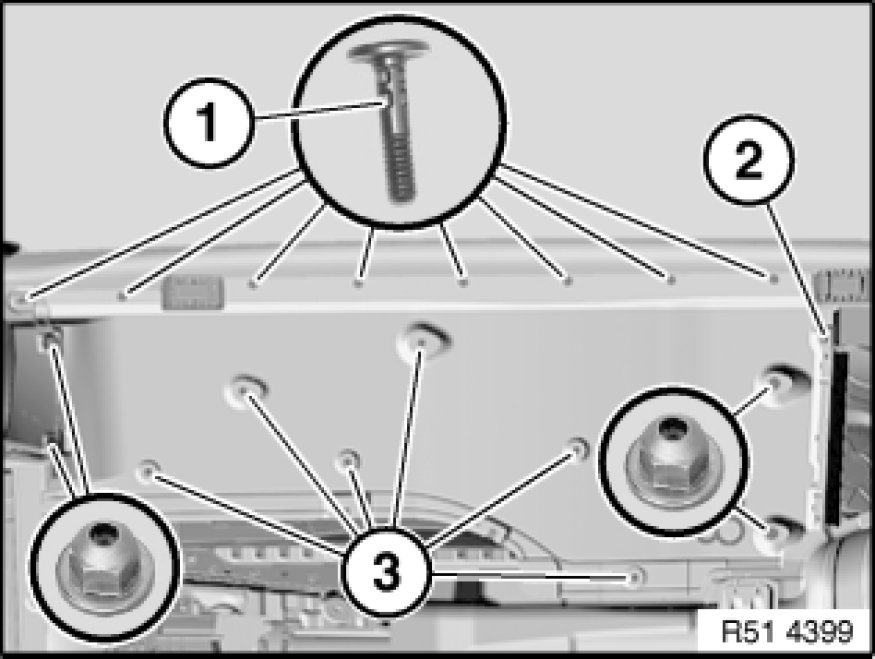
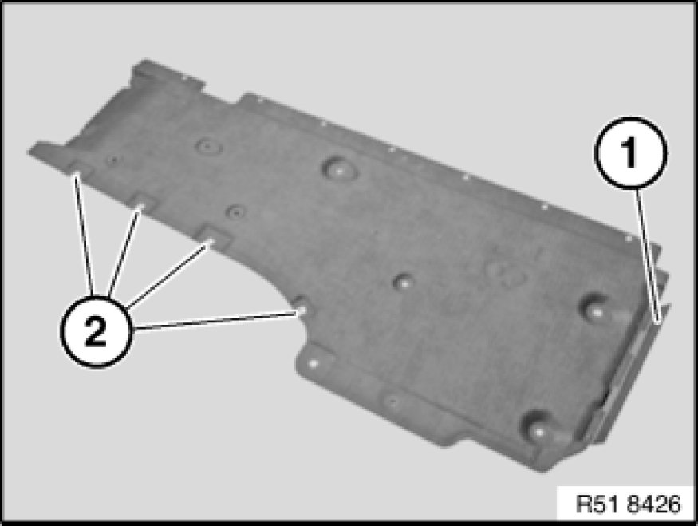

Removing and Installing/Replacing Left or Right Underbody Panelling
51 47 ... - Removing and installing/replacing left or right underbody panelling

Necessary preliminary tasks:
Only if removing left underbody panelling:
- Remove rear underbody protection Removing and Installing/Replacing Rear Underbody Protection
Note:
Prior to removing, pay attention to the exact installation position with respect to the adjoining components.
The operation is described on the left side; proceed in the same way for the right side.

Release plastic nuts.
Release clips (1).
Unfasten screws (2 and 3).
Feed underbody panelling out of front wheel arch trim and remove towards bottom.
Installation:
If necessary, replace faulty clips (1) and plastic nuts.

Replacement:
- Modify lip Removing and Installing/Replacing Lip on Underbody Panelling on Left or Right (1)
- Modify sheet nuts (2)
Installation:
If necessary, replace faulty metal nuts (2).